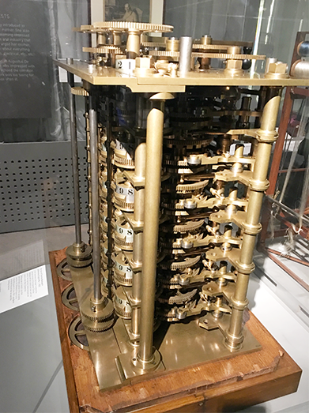
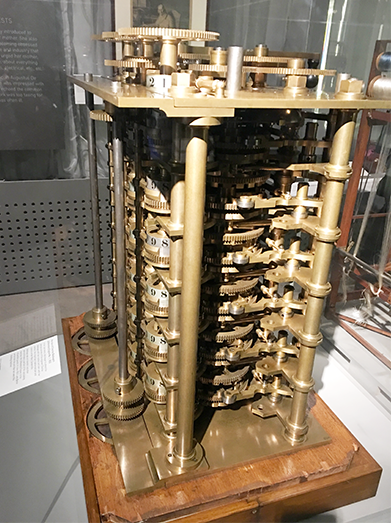

Разностная машина состояла из ряда столбцов с зубчатыми колесами, каждое из которых представляло цифру в десятичной системе. Эти колеса были соединены через набор шестеренок и могли поворачиваться для выполнения операций сложения и вычитания. В основе работы разностной машины лежал математический метод конечных разностей, который позволял вычислять широкий спектр функций, используя только основные арифметические операции.
Чтобы использовать разностную машину, оператор устанавливал начальные значения на колесах, а затем машина автоматически выполняла вычисления для создания нужной математической таблицы. После завершения вычислений машина могла выдать результаты в печатном виде.
 

Правительство Великобритании финансировало разработку Чарльза десять лет. В итоге он лишился поддержки государства и постепенно потерял интерес к проекту. Только между 1847 и 1849 годами ученый вернулся к первоначальной разработке и создал разностную машину №2.